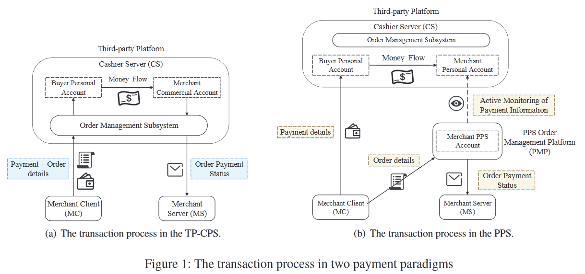
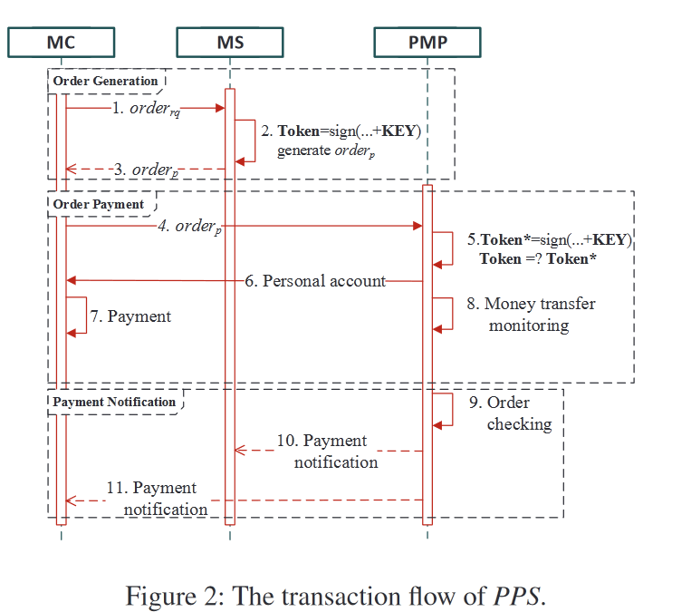
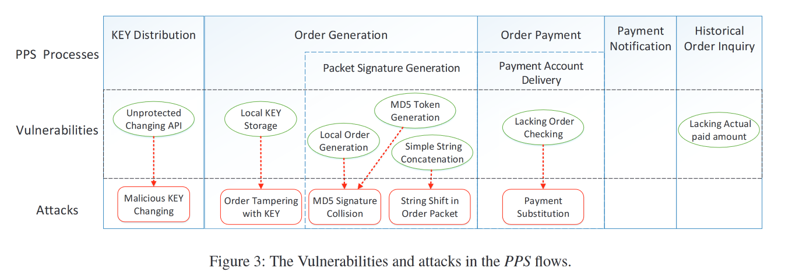
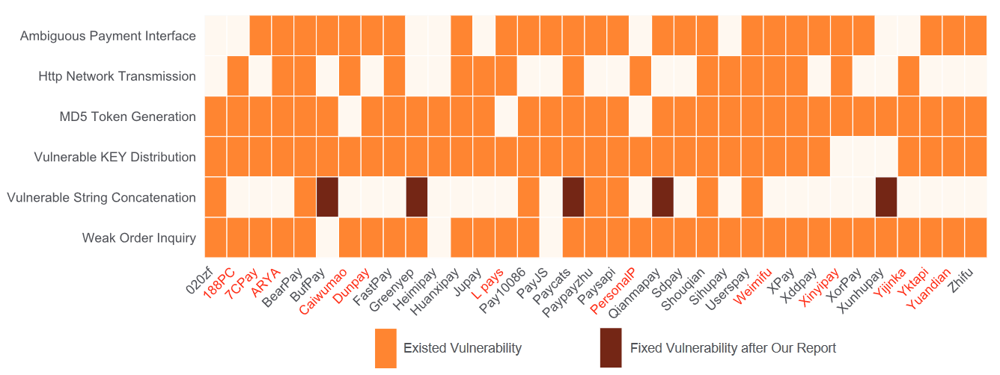

论文阅读：Messy States of Wiring: Vulnerabilities in Emerging Personal Payment Systems
该论文为本周讨论班battle论文，由我负责进行小组领读，因此对该论文做一个记录
文章介绍
该论文发表在Usenix Security 21上，是一篇关注了新兴的个人支付系统（Personal Payment System，PPS）安全的文章。该文章对PPS进行系统建模，并分析每个流程所存在的安全漏洞，并结合这些漏洞在收集到的35个PPS平台上进行分析和攻击，是第一篇关注到这种系统并进行安全分析的文章。
文章的研究背景
文章研究的PPS是一个为商户提供订单管理，订单查询以及交易过程中的资金交易情况的平台，在用户，第三方支付平台（如微信，支付宝）以及商户这三者间建立联系。

由于第三方平台在注册商业账户时候所需要的高门槛，高保证金（或者高预计营收），以及高手续费等问题，部分商户会选择使用PPS来实现对订单的管理，但是这类平台目前处于一个比较不成熟的阶段，因此其中的安全问题值得进行分析
对PPS系统的建模
PPS系统包含5个阶段，分别是注册和密钥分发，订单生成，订单支付，支付通知以及历史订单查询。下面分阶段说明。
注册和密钥分发
- 注册：商户在第三方支付平台注册个人账户用于收款，在PPS中注册商业账户；PPS通过web的方式分发密钥KEY，该密钥通过web的安全性保护；
- 密钥更新：通过web界面或者REST Api；
- 公共接口和订单格式：订单中包含订单标识符，支付的URL，价格，商户ID以及签名（称为TOKEN），其中签名一般是其他的信息字符串拼接+密钥KEY做MD5生成；

订单生成
订单生成（对应上图1-3）：MC发送商品信息和支付方式给MS，MS使用密钥KEY和订单的信息生成TOKEN，发送回MC；
订单支付
订单支付（对应上图4-8）：MC发送订单给PMP，PMP找到订单中的商家对应的密钥KEY，计算TOKEN，对订单的完整性进行校验；（这里PMP可能会对订单的支付金额进行微小扰动，目的是区分同一商家的不同订单）；PMP向MC发送支付信息，如二维码，让用户支付，同时PMP需要监听支付状态（不同的PMP平台监听的方式不同，一种方式是在商家的手机中安装一个app监听商家的账户收款状态）；
支付通知
支付通知（对应9-11）：PMP监听到商家的商户收款信息之后，如果订单金额匹配上，那么通知MS支付成功，包括支付状态，订单编号，支付金额；同时通过url通知MC；
订单查询
订单查询：MS向PMP发送查询请求，包含商户ID，订单ID，以及使用密钥KEY生成的TOKEN；PMP校验请求的合法性，向MS发送查询结果；
PPS系统的漏洞以及攻击

在PPS系统的各个阶段总共存在7种漏洞，如上图所示，对应的可以有5种攻击。分阶段来看：
- 注册和订单生成阶段
- 漏洞1：未对密钥更新API的使用进行认证
- 攻击1：攻击者可以使用商家ID重复对商家的密钥进行更新，从而实现DoS攻击；此外，有些PPS会将新密钥放在返回报文中，攻击者可以直接获取到商家的密钥；
- 漏洞1：未对密钥更新API的使用进行认证
- 订单生成阶段
- 漏洞2：密钥存储于本地或者说客户端
- 攻击2：攻击者通过逆向客户端可以获得商家的密钥；
- 漏洞3：订单信息由本地生成
- 漏洞4：使用MD5算法签名
- 攻击3：MD5算法可以找到碰撞，本地生成订单可以提供给攻击者足够的范围去进行碰撞的构造；此外，作者还通过预测订单中某些时效的字段来给订单碰撞提供时间，订单中可以进行调整并且不影响订单本身的含义的字段如url最后#所带的内容，最后是作者会生成多组碰撞值防止一组碰撞值中包含一些特殊格式的保留字符，如JSON格式的一些字符；
- 漏洞5：对签名所用的字符串直接拼接
- 攻击4：攻击者可以通过调整一个拼接而成的字符串在两个域的分隔，来实现签名一致的同时获利，如当价格和返回url直接进行拼接时，攻击者可以将订单信息中价格的最后一位移动到返回url的第一位，虽然会影响客户端接收返回值，但是该订单的签名是能通过服务端的签名校验，从而对商品的价格实现修改。该攻击的想要成功实施需要三个条件：
- 部分PPS直接对订单中的信息进行字符串拼接，而不是使用特殊分隔符进行分隔；
- PMP不知道商品价格；
- MS依赖PMP通知的支付状态确认订单有没有支付成功，不知道实际的价格；
- 攻击4：攻击者可以通过调整一个拼接而成的字符串在两个域的分隔，来实现签名一致的同时获利，如当价格和返回url直接进行拼接时，攻击者可以将订单信息中价格的最后一位移动到返回url的第一位，虽然会影响客户端接收返回值，但是该订单的签名是能通过服务端的签名校验，从而对商品的价格实现修改。该攻击的想要成功实施需要三个条件：
- 漏洞2：密钥存储于本地或者说客户端
- 订单支付阶段
- 漏洞6：发送给用户的订单支付信息只有收款码，价格以及订单号；
- 攻击5：攻击者可以劫持受害者和服务端的通信，将支付的订单信息替换为自己的信息，受害者比较难判断支付的订单是否为自己所下的订单；
- 漏洞6：发送给用户的订单支付信息只有收款码，价格以及订单号；
- 历史订单查询阶段
- 漏洞7：订单查询只能查询到订单的支付状态，不包含订单的价格，客观上为攻击的隐蔽性提供了条件；
评估以及结果
作者通过关键词在网络以及论坛上进行搜索，共收集了35个PPS，他们的漏洞情况如下：

其中横轴表示PPS，纵轴表示漏洞类型，橙色表示有漏洞，深红色表示漏洞经过作者报告之后已被修复，红色名称的PPS表示该PPS在作者报告漏洞之后已经停止服务。
从这个结果来看的话，作者所提出的这些漏洞确实在PPS中是比较共通的，不过这个表格中的漏洞类型跟作者前面指出的7种漏洞不太匹配，包括http网络传输。
有意思的是，作者提到了有一些PPS多次联系是没有回复的，所以还通知了第三方支付平台这些有漏洞的PPS，同时，可能是因为体量的问题，这些漏洞应该是拿不到CVE的。
漏洞分类以及攻击分类
- 漏洞分类：
- PPS协议漏洞（5个）：没有保护的密钥更新API，TOKEN生成时简单的字符串拼接，使用MD5生成TOKEN，缺乏订单确认信息校验，历史订单查询缺乏支付价格
- 实现漏洞（2个）：本地订单生成，本地密钥KEY存储
- 攻击分类：
- 恶意用户攻击（3个）：使用密钥进行报文伪造，在订单报文中进行字符串移位以及MD5签名碰撞
- 针对受害者的攻击（1个）：支付信息替换攻击
- 针对商家的攻击（1个）：恶意密钥更新攻击
缓解措施
- 对于PPS服务提供者：
- 密钥更新API需要认证；
- 使用比MD5更强的签名算法
- 向用户展示更清晰的支付信息和订单信息
- 在支付状态通知和订单查询结果中展示具体的支付金额
- 对于商家：
- 密钥不应该存储在客户端
- 订单参数应该在服务端生成
- 收到支付通知的时候检查支付金额
- 对于用户：
- 检查支付时的订单信息
- 不要在不安全的网络环境中支付
总结
本文从总体来说确实对PPS的结构进行了细致的分析，从这些分析也可以看出来这是一个非常新兴的平台形式，同时PPS他面向的是一些不具备注册第三方支付平台商业账号的小商户，那么这个平台的影响力就还要结合这些商户的数量还有影响进行具体分析。作者总结出来的这些漏洞类型确实是这个平台在设计上的不成熟导致的，可以看出没做很多的安全审计相关的内容，所以有些攻击看起来一方面很通用，另一方面也比较容易实施，这些多少会弱化本文在技术上的一些创新。